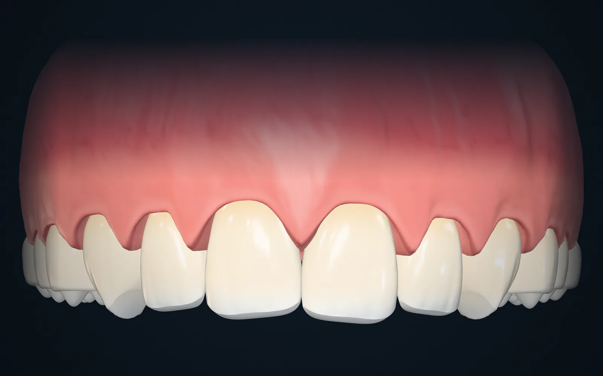
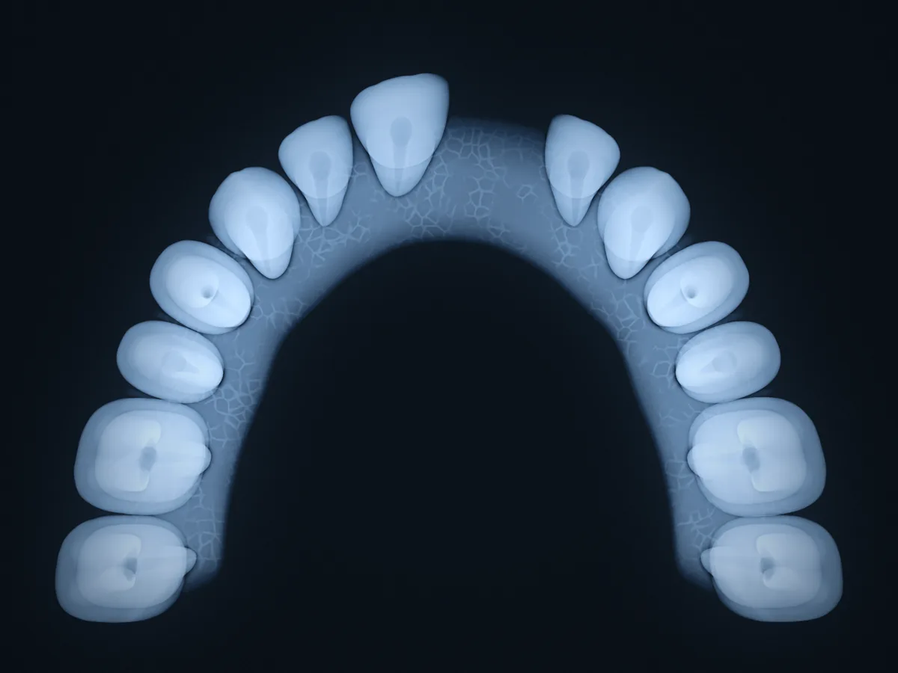
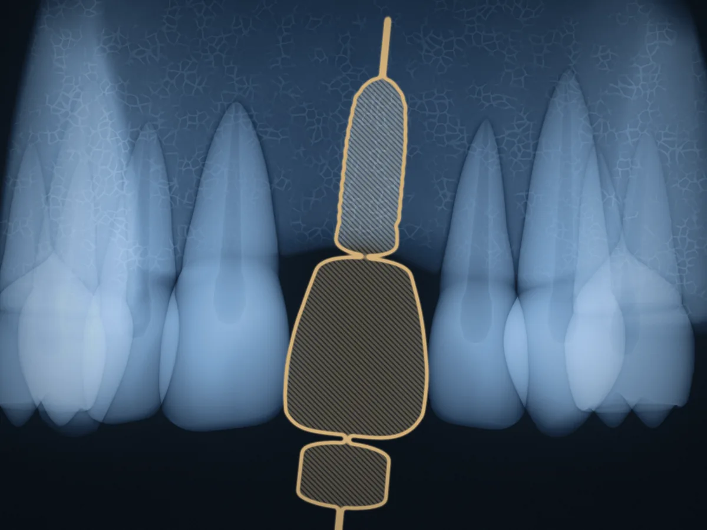
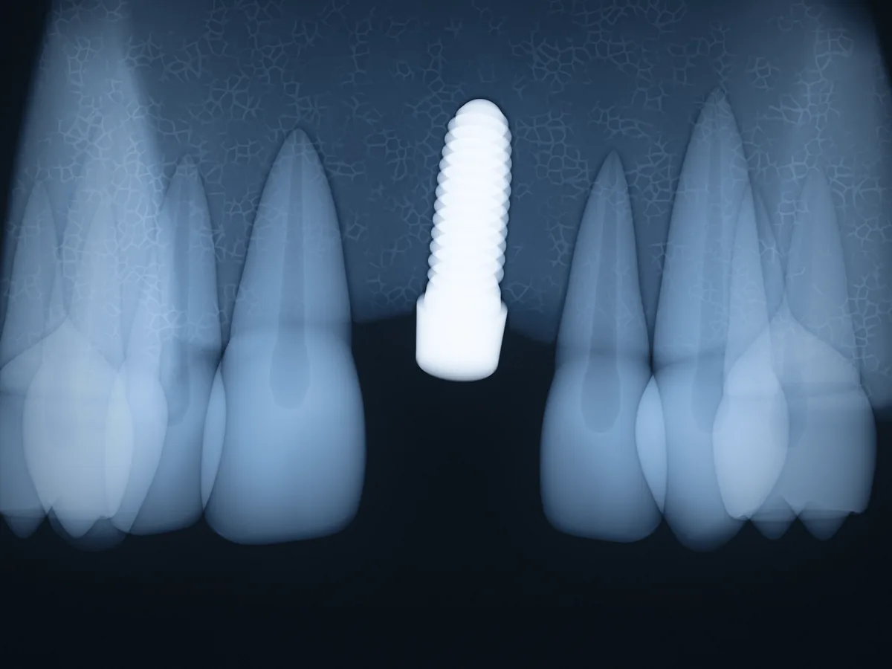
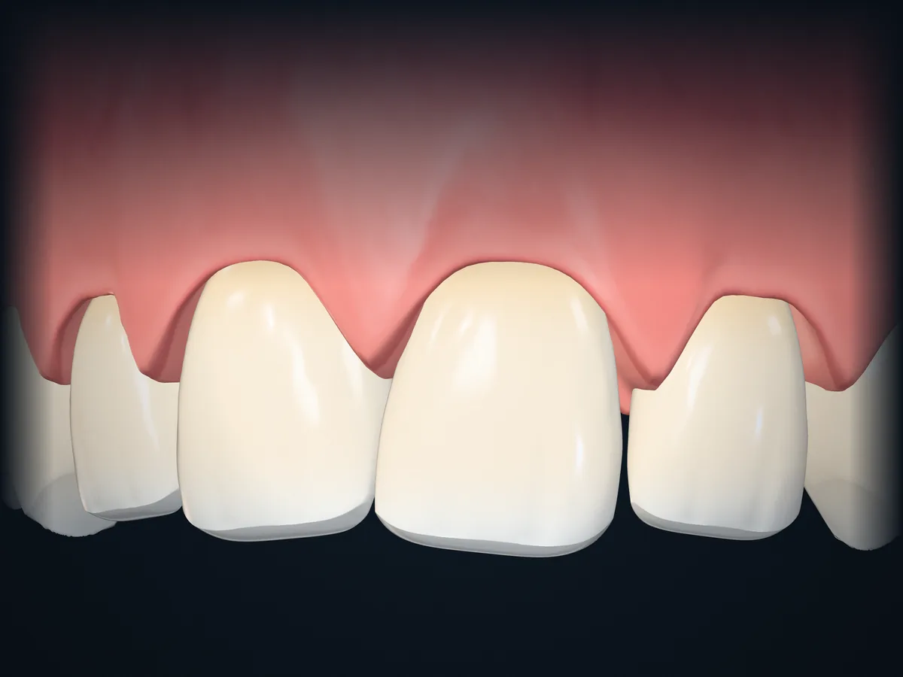
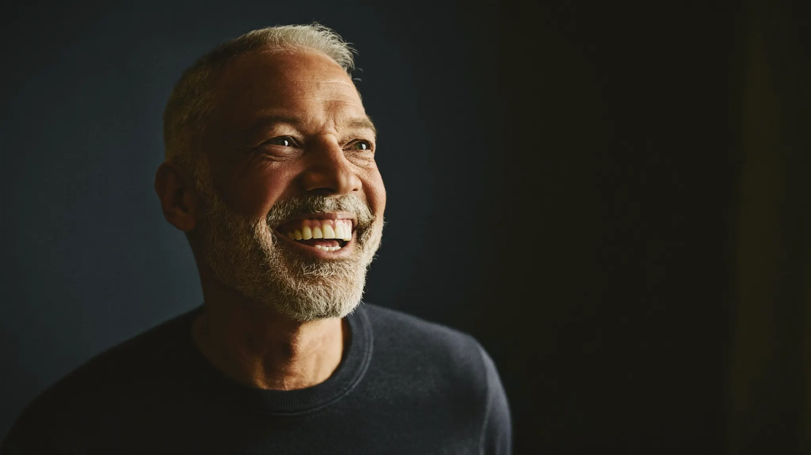
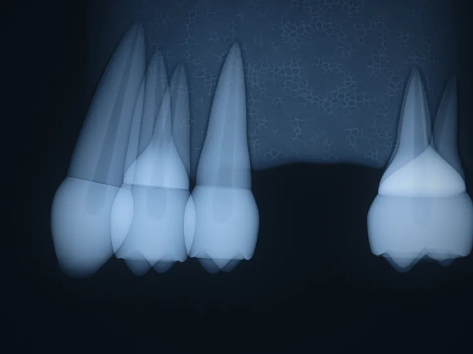
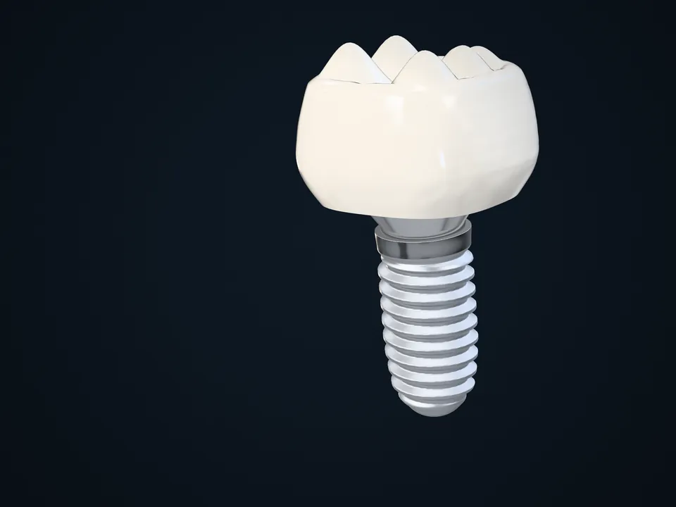

Gesetzlich versichert
Das Implantat selbst ist meist eine Privatleistung. Für Krone, Brücke oder Prothese darauf zahlt die Kasse einen Festzuschuss, mit lückenlosem Bonusheft mehr.
Feste Zähne statt Lücke oder Prothese. Ob Ihnen ein Zahn fehlt, mehrere fehlen oder die Prothese wackelt: Wir planen jedes Implantat vorher am 3D-Röntgenbild und besprechen den Plan mit Ihnen, bevor überhaupt etwas passiert.
Tippen Sie auf Ihre Situation. Dann sehen Sie, wie wir in dem Fall vorgehen.
Ein Implantat ersetzt die Wurzel, darauf kommt eine eigene Krone. Die Nachbarzähne bleiben, wie sie sind. Für eine Brücke müssten wir sie beschleifen, und das vermeide ich, wo es geht.
Termin zu diesem AnliegenOft tragen zwei Implantate eine Brücke über drei oder vier Zähne. Wie viele es in Ihrem Fall braucht, zeigt die Planung am 3D-Bild.
Termin zu diesem AnliegenSchon zwei bis vier Implantate können eine Prothese festhalten, entweder abnehmbar auf Druckknöpfen oder fest verschraubt. Was zu Ihrem Kiefer passt, klären wir nach dem 3D-Röntgen.
Termin zu diesem AnliegenHäufig lässt sich Knochen vorher oder beim Eingriff aufbauen. Das 3D-Röntgen zeigt genau, wie viel da ist und was es braucht.
Termin zu diesem AnliegenBringen Sie Ihre Röntgenbilder und den Heil- und Kostenplan mit, den Sie bekommen haben. Ich schaue mir beides in Ruhe an und sage Ihnen ehrlich, was ich davon halte. Auch dann, wenn der andere Plan gut ist.
Termin zu diesem AnliegenZiehen Sie den Regler. Links sehen Sie die Zähne, wie man sie im Spiegel sieht, rechts dieselben Zähne im Röntgenbild: Das Implantat steht im Knochen wie eine eigene Wurzel.

Alle drei schließen eine Lücke. Der Unterschied liegt darin, was mit den Nachbarzähnen und dem Knochen passiert, und natürlich darin, was es kostet.
Was zu Ihnen passt, hängt von Ihren Zähnen und Ihrem Knochen ab. Das klären wir im Beratungstermin.




Symbolbild
Wieder lachen, ohne an die Lücke zu denken.
Beratungstermin buchenDeshalb erkläre ich Ihnen vorher genau, was passiert und warum.


Ohne Wurzel baut sich der Knochen darunter langsam ab, und die Nachbarzähne können in die Lücke kippen.
Drei kurze Fragen. Am Ende sehen Sie, worauf es in Ihrem Fall ankommt. Die Antworten können Sie direkt in Ihre Terminbuchung übernehmen.
1 / 3
Den genauen Preis nennen wir, sobald wir Ihre Situation kennen. Er hängt vor allem von den vier Punkten unten ab.
Nach der Planung bekommen Sie einen schriftlichen Heil- und Kostenplan. Erst wenn Sie zustimmen, geht es los.
Was den Preis bestimmt
Das Implantat selbst ist meist eine Privatleistung. Für Krone, Brücke oder Prothese darauf zahlt die Kasse einen Festzuschuss, mit lückenlosem Bonusheft mehr.
Was Ihr Tarif übernimmt, klären Sie vorab mit dem Heil- und Kostenplan bei Ihrer Versicherung.

Ich bin Novin Molaie, Zahnarzt der Zahnarztpraxis AIXSMILE in der Aachener Innenstadt. Beim Beratungstermin nehme ich mir Zeit für Ihre Fragen und zeige Ihnen am 3D-Bild, was in Ihrem Fall möglich ist und was nicht.
Novin MolaieZahnarzt · Zahnarztpraxis AIXSMILE, Aachen
Diese Zeiten sind gerade wirklich frei. Zeit wählen, Namen und Telefonnummer eintragen, fertig.
Ihre Frage ist nicht dabei? Wir beantworten sie gern am Telefon: 0241 31202
Während des Eingriffs nicht. Die Stelle ist örtlich betäubt, Sie spüren Druck, aber keinen Schmerz. Die meisten Patienten sagen mir hinterher, dass sie es sich deutlich schlimmer vorgestellt hatten. Wenn Sie sehr nervös sind, sprechen Sie mich an, dafür gibt es Lösungen.
Rechnen Sie mit ein paar Tagen Schwellung und einem Druckgefühl, ähnlich wie nach dem Ziehen eines Zahns. Mit Kühlen und einem normalen Schmerzmittel ist das gut auszuhalten. Was Sie in den ersten Tagen beachten sollten, erklären wir Ihnen am Behandlungstag.
Das Implantat selbst ist in der Regel eine Privatleistung. Für den Zahnersatz darauf zahlt die Kasse einen Festzuschuss, der mit lückenlos geführtem Bonusheft höher ausfällt. Was genau auf Sie zukommt, steht im Heil- und Kostenplan.
Ja. Nach der Planung erhalten Sie einen schriftlichen Heil- und Kostenplan ohne versteckte Kosten. Behandelt wird erst, wenn Sie zugestimmt haben.
Das hängt von Ihrer Situation und dem Kieferknochen ab. Üblich sind einige Wochen bis wenige Monate, bis sich das Implantat fest mit dem Knochen verbunden hat. Den voraussichtlichen Zeitplan stimmen wir nach der Diagnostik mit Ihnen ab.
Viele unserer Implantatpatienten kommen nicht aus Aachen selbst. Von Köln sind es mit dem Zug etwa 40 Minuten bis Aachen Hauptbahnhof, von Düren rund 25, und von dort ein kurzer Fußweg oder zwei Busstationen bis zur Großkölnstraße. Mit dem Auto parken Sie direkt gegenüber im Parkhaus. Für die Beratung und das 3D-Röntgen brauchen Sie einen Termin, den Eingriff und die Krone legen wir so, dass Sie möglichst selten fahren müssen.
In der Regel nicht. Eine Übergangsversorgung sorgt in dieser Zeit für ein gepflegtes Aussehen. Welche passt, hängt von der Stelle und Ihrem Zahnersatz ab.
Die meisten schon, aber nicht jeder. Was ich brauche, sind genug Knochen und gesundes Zahnfleisch. Ob Implantate für Sie sinnvoll sind, klären wir mit dem 3D-Röntgen im Beratungstermin.
Das heißt noch nicht, dass es nicht geht. Häufig lässt sich Knochen vorher oder beim Eingriff aufbauen. Wie viel da ist und was nötig wäre, zeigt das 3D-Röntgen im Beratungstermin.
Bei guter Mundhygiene und regelmäßigen Kontrollen können Implantate viele Jahre und oft ein Leben lang halten. Entscheidend sind gesundes Zahnfleisch, sorgfältige Pflege und der Verzicht auf starkes Rauchen. Eine Garantie auf eine bestimmte Zahl von Jahren kann ich Ihnen ehrlicherweise nicht geben. Das kann niemand.
Im Grunde wie eigene Zähne: gründlich putzen, die Zwischenräume täglich reinigen und regelmäßig zur Kontrolle und Reinigung in die Praxis kommen. So bleiben Implantat und Zahnfleisch gesund.
Ein paar Minuten vom Markt und vom Bushof; das Parkhaus Großkölnstraße liegt direkt gegenüber.
Zu uns kommen Implantatpatienten aus ganz Aachen und der Städteregion, aus Eschweiler, Stolberg, Würselen und Herzogenrath, aus dem Kreis Düren und dem Kreis Heinsberg, und regelmäßig aus Köln sowie aus dem nahen Belgien und den Niederlanden. Vom Hauptbahnhof sind es zwei Busstationen, von der A4 und A44 etwa zehn Minuten.
 Großkölnstraße 22-28Route öffnen
Großkölnstraße 22-28Route öffnen